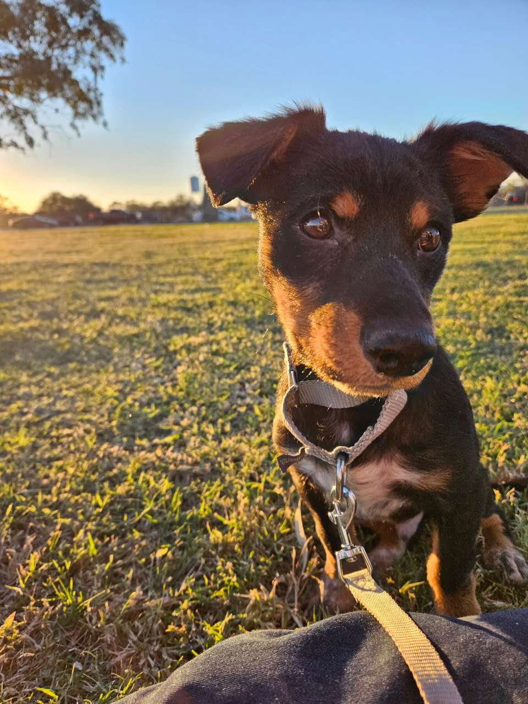
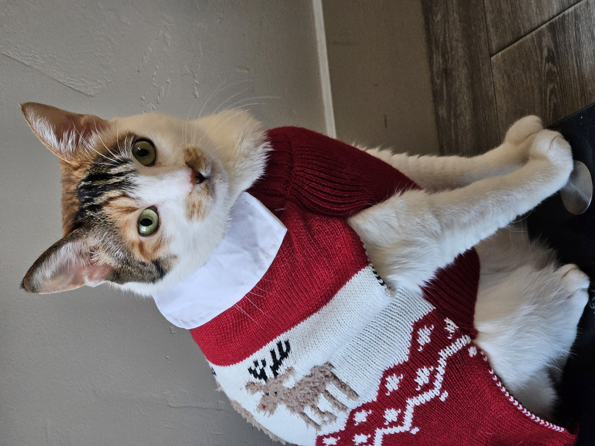
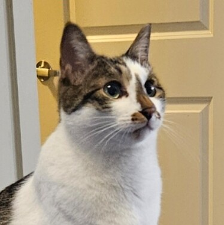

Fafa is a friendly dog who loves to play and cuddle. He is an Australian Kelpie mix. Kelpie's are known for their intelligence and agility. They are used for herding sheep and other livestock. Their smaller size and agility allows them to actually run on top of the sheeps backs while herding!

Xiaomi is a curious cat who enjoys exploring and napping in sunny spots. She is a Chinese Li Hua, also known as a Dragon Li. This breed is known for its distinctive tabby coat and playful personality. Xiaomi like to climb to high places and observe her surroundings from above, but she is fat and cant jump very high.

Bagel is a mischievous cat who loves to chase toys and get into everything. He is also a Chinese Li Hua, like Xiaomi. Bagel is very energetic and loves to play. He loves to go outside and explore the neighborhood, often bringing back "gifts" for his owners. Unfortunately, he ran away while we were living in Utah and we have not seen him since. I have heard that he his still in the neighborhood though.
Back to Top